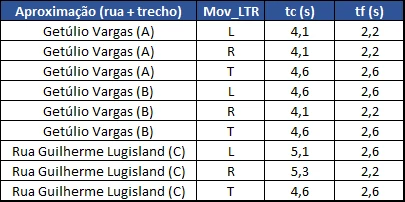

Navegação: ← Anterior | Sumário | Próximo →
12. SISTEMA VIÁRIO ATUAL¶
Antes da leitura dos resultados apresentados neste capítulo, registra-se que os volumes incrementais adotados decorrem da metodologia consolidada no Capítulo 9. A ocupação atualmente existente nos empreendimentos foi considerada como demanda já incorporada à rede viária na condição de referência, razão pela qual não foi novamente somada aos horizontes futuros. Para as projeções de 5, 10 e 15 anos, considerou-se apenas a parcela remanescente de ocupação, convertida em geração líquida de viagens e distribuída na malha viária atual conforme as proporções de movimento observadas, os acessos prováveis e a lógica de percurso disponível sem as intervenções propostas.
Dessa forma, a análise do sistema viário atual representa a condição em que o crescimento tendencial da frota e a expansão remanescente dos empreendimentos são absorvidos exclusivamente pelas rotas hoje existentes, sem o alívio operacional da nova ligação entre a Rua Dr. José Firmo Bernardi e a Rua Getúlio Vargas e sem a redistribuição adicional associada à requalificação da Rua Arvino de Oliveira.
Os resultados apresentados correspondem aos últimos cálculos registrados no HCM-LOS para esta condição de rede. Os arquivos e registros utilizados constituem entregáveis gerados pelo aplicativo HCM-LOS, desenvolvido pelo mesmo profissional responsável pela elaboração deste trabalho, com a finalidade de apoiar a modelagem, o processamento e a leitura operacional de segmentos, interseções e nós viários.
O aplicativo adota lógica compatível com os princípios do Highway Capacity Manual, especialmente quanto à avaliação de capacidade, relação volume/capacidade, atraso, nível de serviço e desempenho operacional, com as adaptações necessárias às características geométricas, funcionais e operacionais das vias analisadas.
Assim, os resultados do sistema viário atual devem ser lidos como a condição de referência futura sem intervenção, na qual a malha existente absorve simultaneamente o crescimento tendencial e a ocupação remanescente dos empreendimentos.
12.1 SEGMENTOS VIÁRIOS¶
Para a análise dos segmentos viários do sistema atual, foram considerados os trechos da Rua Dr. José Firmo Bernardi, Rua Guilherme Lugisland, Rua Sete de Setembro, Rua Albino Holsbach e Rua Getúlio Vargas, avaliados no cenário Tendencial + Empreendimento, com projeções para os horizontes de 5, 10 e 15 anos.
A leitura técnica indica condição operacional crítica em parte significativa da malha atual quando submetida ao crescimento tendencial e à ocupação remanescente dos empreendimentos. Os resultados apontam degradação progressiva do desempenho viário nos horizontes futuros, com aumento da relação volume/capacidade e piora dos níveis de serviço nos segmentos de maior carregamento.
As condições mais desfavoráveis concentram-se nos corredores que absorvem os principais fluxos de ligação entre bairros, área central e acessos aos empreendimentos. Destacam-se a Rua Sete de Setembro, a Rua Guilherme Lugisland, a Rua Albino Holsbach e a Rua Dr. José Firmo Bernardi, que apresentam maior sensibilidade ao acréscimo de demanda no cenário sem intervenções. A Rua Getúlio Vargas também integra a leitura do sistema atual por sua função de conexão estruturante na malha urbana analisada.
A análise por sentido de circulação demonstra que a saturação não ocorre de forma homogênea ao longo da rede. Em determinados segmentos, o carregamento crítico se concentra no sentido bairro-centro; em outros, observa-se maior pressão no sentido centro-bairro, em razão da distribuição dos acessos, da configuração da malha e dos percursos prováveis adotados para a alocação das viagens incrementais.
Para demonstrar os resultados, são apresentadas tabelas e gráficos comparativos da operação atual e dos horizontes projetados, permitindo visualizar a evolução do desempenho por segmento, sentido de circulação, relação volume/capacidade e nível de serviço no cenário sem implantação das intervenções propostas.
12.1.1 Rua Getúlio Vargas¶
A Rua Getúlio Vargas exerce papel relevante na distribuição dos fluxos entre a área central e o bairro Flor da Serra, funcionando como eixo de ligação entre áreas de ocupação consolidada e setores de expansão urbana. Embora possua importância operacional na malha viária, o segmento encontra-se hierarquizado como via local, condição que limita sua capacidade funcional diante do aumento progressivo da demanda projetada.
As tabelas e gráficos apresentados a seguir demonstram a evolução dos volumes, da relação V/C e dos níveis de serviço nos horizontes de 5, 10 e 15 anos, considerando o cenário Tendencial + Empreendimento no sistema viário atual. A análise permite identificar os trechos com maior sensibilidade operacional, os sentidos de circulação mais carregados e a tendência de perda de desempenho ao longo do tempo, especialmente nos movimentos de retorno do bairro em direção à área central.
{kind=link}
Tabela 12.1 - Horizontes 5, 10 e 15 anos - LOS
{kind=link}
Gráfico 12.1 - Horizontes 5, 10 e 15 anos – volume comparativo
{kind=link}
Gráfico 12.2 - V/C Comparativo nos Horizontes
Em síntese, os resultados indicam que, embora a Rua Getúlio Vargas apresente condição de base predominantemente satisfatória nos trechos associados ao Ponto de Contagem 01, com nível de serviço A, o cenário Tendencial + Empreendimento demonstra degradação operacional relevante já no horizonte de 5 anos. A criticidade concentra-se principalmente no sentido Bairro → Centro, que passa a absorver os maiores carregamentos de retorno em direção à área central.
No Ponto de Contagem 01, o trecho mais sensível corresponde ao Trecho B, sentido Bairro → Centro, que atinge nível de serviço F já em 5 anos, com relação V/C de 1,718, evoluindo para 3,076 em 10 anos e 5,085 em 15 anos. O Trecho A, no mesmo sentido, também apresenta condição crítica nos três horizontes, mantendo nível de serviço F e registrando V/C de 1,021, 1,831 e 3,029, respectivamente.
Nos trechos associados ao Ponto de Contagem 02, a criticidade é ainda mais acentuada, uma vez que a via já se insere em área de maior centralidade urbana e passa a atuar como eixo de convergência e redistribuição de fluxos locais em direção à Avenida Barão do Rio Branco. Nesse ponto, os trechos avaliados operam em nível de serviço F nos horizontes de 5, 10 e 15 anos, com destaque para o Trecho B, sentido Bairro → Centro, cujo V/C passa de 2,651 em 5 anos para 4,442 em 10 anos e 7,073 em 15 anos.
Dessa forma, no sistema viário atual, a Rua Getúlio Vargas apresenta perda progressiva de desempenho, com maior criticidade nos movimentos Bairro → Centro e nos trechos próximos à área central. A leitura evidencia que, sem intervenções de redistribuição dos fluxos ou ordenamento operacional, a via tende a operar com saturação crescente nos horizontes futuros, consolidando-se como um dos eixos de maior restrição funcional na ligação entre o bairro Flor da Serra e a área central.
12.1.2 Rua Dr. José Firmo Bernardi¶
A Rua Dr. José Firmo Bernardi está hierarquizada como via coletora e desempenha papel fundamental na estruturação do crescimento urbano no setor oeste do município, área atualmente em processo de desenvolvimento e expansão. Por sua função de conexão entre novos setores de ocupação e a área central, o segmento assume relevância estratégica na malha viária analisada.
Apesar dessa importância funcional, a via apresenta limitações físicas e operacionais que restringem sua capacidade de atuar como principal eixo de absorção dos novos fluxos, especialmente por conduzir diretamente às áreas centrais sem alternativas suficientes de redistribuição da demanda.
As tabelas e gráficos apresentados a seguir demonstram a evolução dos volumes, da relação V/C e dos níveis de serviço nos horizontes de 5, 10 e 15 anos, considerando o cenário Tendencial + Empreendimento no sistema viário atual. A leitura permite identificar a progressiva perda de desempenho da via, os trechos de maior sensibilidade operacional e os pontos com maior tendência à saturação.
{kind=link}
Tabela 12.2 - Horizontes 5, 10 e 15 anos - LOS
{kind=link}
Gráfico 12.3 - Horizontes 5, 10 e 15 anos – volume comparativo
{kind=link}
Gráfico 12.4 - V/C Comparativo nos Horizontes
Em síntese, a Rua Dr. José Firmo Bernardi apresenta, na condição de base, desempenho operacional satisfatório, com nível de serviço A nos trechos avaliados. Entretanto, no cenário Tendencial + Empreendimento, verifica-se degradação expressiva do desempenho ao longo dos horizontes projetados, indicando limitação da via para absorver, sem intervenções, o crescimento tendencial e a ocupação remanescente dos empreendimentos considerados.
No horizonte de 5 anos, já são observados trechos com níveis de serviço desfavoráveis, variando entre C, D, E e F, com criticidade mais acentuada nos Pontos de Contagem 04, 05, 06 e 07, especialmente nos trechos B e nos sentidos de maior carregamento. No horizonte de 10 anos, a condição crítica se generaliza, com predominância de nível de serviço F na maioria dos trechos e sentidos analisados. No horizonte de 15 anos, todos os trechos avaliados no cenário tendencial acrescido dos empreendimentos atingem nível de serviço F, evidenciando saturação operacional ampla do segmento.
Os pontos mais críticos concentram-se nos trechos associados aos Pontos de Contagem 05, 06 e 07, especialmente no sentido Centro → Bairro, onde a demanda projetada indica os maiores níveis de comprometimento da capacidade viária. Essa condição evidencia que o eixo passa a concentrar fluxos relevantes tanto de acesso quanto de retorno entre o setor oeste e a área central, ampliando progressivamente sua condição de saturação.
Dessa forma, no sistema viário atual, a Rua Dr. José Firmo Bernardi tende a se consolidar como potencial gargalo da malha viária caso permaneça como eixo praticamente único de ligação entre o setor oeste em crescimento e as áreas centrais. A leitura reforça a necessidade de alternativas de redistribuição da demanda e de alívio operacional, de modo a reduzir a sobrecarga projetada sobre o segmento nos horizontes futuros.
12.1.3 Rua Sete de Setembro¶
A Rua Sete de Setembro desempenha papel relevante na articulação dos fluxos entre a malha urbana consolidada, a Rua Guilherme Lugisland e a Rua Dr. José Firmo Bernardi, especialmente nos trechos associados aos Pontos de Contagem 07 e 08. Por sua posição na rede, o segmento recebe deslocamentos de ligação e redistribuição, assumindo função operacional sensível no sistema viário atual.
As tabelas e gráficos apresentados a seguir demonstram a evolução dos volumes, da relação V/C e dos níveis de serviço nos horizontes de 5, 10 e 15 anos, considerando o cenário Tendencial + Empreendimento. A leitura permite identificar os trechos com maior comprometimento operacional, os sentidos de maior carregamento e a tendência de saturação progressiva nos pontos de maior convergência de fluxos.
{kind=link}
Tabela 12.3 - Horizontes 5, 10 e 15 anos - LOS
{kind=link}
Gráfico 12.5 - Horizontes 5, 10 e 15 anos – volume comparativo
{kind=link}
Gráfico 12.6 - V/C Comparativo nos Horizontes
Em síntese, a Rua Sete de Setembro apresenta, na condição de base, desempenho predominantemente satisfatório, com nível de serviço A na maior parte dos trechos avaliados. A exceção ocorre no Trecho A, associado ao Ponto de Contagem 08, sentido Centro → Bairro, que já apresenta nível de serviço C na condição inicial, indicando maior sensibilidade operacional nesse ponto.
No cenário Tendencial + Empreendimento, observa-se degradação progressiva do desempenho em trechos específicos, especialmente no sentido Centro → Bairro. No horizonte de 5 anos, atingem nível de serviço F o Trecho A do Ponto de Contagem 07, sentido Centro → Bairro, o Trecho A do Ponto de Contagem 08, sentido Centro → Bairro, e o Trecho B do Ponto de Contagem 08, também no sentido Centro → Bairro. Esses trechos registram, respectivamente, relações V/C de 1,134, 1,994 e 1,590 nesse horizonte.
No horizonte de 10 anos, a criticidade permanece concentrada nos mesmos trechos, com V/C de 2,173 no P07, Trecho A, sentido Centro → Bairro; V/C de 3,455 no P08, Trecho A, sentido Centro → Bairro; e V/C de 2,992 no P08, Trecho B, sentido Centro → Bairro. Além disso, o Ponto de Contagem 07, no sentido Bairro → Centro, passa a apresentar nível de serviço D, com V/C de 0,888, indicando perda de folga operacional.
No horizonte de 15 anos, a saturação se amplia. O Trecho A do Ponto de Contagem 07, sentido Bairro → Centro, evolui para nível de serviço F, com V/C de 1,436. Os trechos críticos no sentido Centro → Bairro permanecem em nível F, com V/C de 3,718 no P07, Trecho A; 5,609 no P08, Trecho A; e 5,074 no P08, Trecho B.
Por outro lado, os sentidos Bairro → Centro associados ao Ponto de Contagem 08 mantêm desempenho favorável, com nível de serviço A nos horizontes avaliados. Dessa forma, no sistema viário atual, a Rua Sete de Setembro apresenta criticidade concentrada principalmente no sentido Centro → Bairro, com maior comprometimento nos trechos associados aos Pontos de Contagem 08 e 07, evidenciando tendência de saturação progressiva caso não sejam implantadas intervenções de redistribuição e alívio operacional.
12.1.4 Rua Guilherme Lugisland¶
A Rua Guilherme Lugisland desempenha papel relevante na articulação entre a Rua Getúlio Vargas, o acesso à UNOESC Campus 1, a Rua Albino Holsbach, a Rua Idalino Machado de Lima e o nó formado pela Rua Sete de Setembro com a Rua Dr. José Firmo Bernardi. Por essa condição, atua como eixo de ligação interna entre pontos estratégicos da malha viária, recebendo fluxos de distribuição associados tanto aos deslocamentos locais quanto aos movimentos de acesso ao setor oeste.
As tabelas e gráficos apresentados a seguir demonstram a evolução dos volumes, da relação V/C e dos níveis de serviço nos horizontes de 5, 10 e 15 anos, considerando o cenário Tendencial + Empreendimento no sistema viário atual. A leitura permite identificar os trechos com maior sensibilidade operacional, os pontos de maior carregamento e a tendência de perda progressiva de desempenho ao longo do eixo.
{kind=link}
Tabela 12.4 - Horizontes 5, 10 e 15 anos – LOS
{kind=link}
Gráfico 12.7 - Horizontes 5, 10 e 15 anos – volume comparativo
{kind=link}
Gráfico 12.8 - V/C Comparativo nos Horizontes
12.1.5 Rua Albino Holsbach¶
A Rua Albino Holsbach corresponde a um segmento curto de conexão entre a Rua Dr. José Firmo Bernardi e a Rua Guilherme Lugisland. Apesar de sua menor extensão, apresenta importância operacional por funcionar como eixo de capilaridade interna da malha, encurtando percursos entre vias estruturantes do setor e oferecendo alternativa de redistribuição dos fluxos locais.
Essa função é semelhante, em escala reduzida, ao papel esperado para a futura via de interligação entre a Rua Dr. José Firmo Bernardi e a Rua Getúlio Vargas, embora esta última deva assumir relevância operacional significativamente maior por criar uma nova conexão estrutural no sistema viário. Assim, a análise da Rua Albino Holsbach permite compreender o comportamento de pequenos eixos de ligação interna e sua sensibilidade diante do aumento progressivo da demanda.
As tabelas e gráficos apresentados a seguir demonstram a evolução dos volumes, da relação V/C e dos níveis de serviço nos horizontes de 5, 10 e 15 anos, considerando o cenário Tendencial + Empreendimento no sistema viário atual. A leitura permite identificar os sentidos de maior carregamento, os trechos com maior comprometimento operacional e a tendência de saturação progressiva do segmento.
{kind=link}
Tabela 12.5 - Horizontes 5, 10 e 15 anos – LOS
{kind=link}
Gráfico 12.9 - Horizontes 5, 10 e 15 anos – volume comparativo
{kind=link}
Gráfico 12.10 - V/C Comparativo nos Horizontes
Em síntese, a Rua Albino Holsbach apresenta, na condição de base, desempenho operacional satisfatório, com nível de serviço A nos trechos avaliados. Entretanto, no cenário Tendencial + Empreendimento, observa-se degradação progressiva do desempenho, especialmente nos sentidos de maior carregamento e nos pontos em que a via atua como conexão entre eixos relevantes da malha.
No horizonte de 5 anos, já são identificados trechos com níveis de serviço desfavoráveis, com destaque para o Ponto de Contagem 05, sentido Bairro → Centro, e para o Ponto de Contagem 09, também no sentido Bairro → Centro, ambos em nível de serviço F. No mesmo horizonte, o Ponto de Contagem 05, sentido Centro → Bairro, apresenta nível de serviço C, indicando início de perda de folga operacional também no sentido oposto.
No horizonte de 10 anos, a criticidade se amplia, com predominância de nível de serviço F nos trechos avaliados, permanecendo apenas o Ponto de Contagem 09, sentido Centro → Bairro, fora da condição crítica mais severa até esse momento. Essa evolução demonstra que a via passa a operar com capacidade progressivamente limitada para absorver os fluxos de ligação entre a Rua Dr. José Firmo Bernardi e a Rua Guilherme Lugisland.
No horizonte de 15 anos, todos os trechos avaliados atingem nível de serviço F, evidenciando saturação generalizada do segmento no cenário sem intervenções. Embora curta, a Rua Albino Holsbach demonstra sensibilidade operacional relevante por concentrar fluxos de conexão entre eixos importantes da malha viária.
Dessa forma, os resultados reforçam a necessidade de alternativas de redistribuição mais robustas, capazes de aliviar os deslocamentos hoje canalizados por vias locais de ligação. A leitura evidencia que, sem a implantação de novas conexões estruturais e medidas de ordenamento operacional, a Rua Albino Holsbach tende a operar com saturação crescente nos horizontes futuros, consolidando-se como ponto de restrição funcional na malha interna do setor.
12.2 INTERSEÇÕES¶
As interseções do sistema viário atual foram avaliadas a partir dos arquivos oficiais organizados em Interseção Atual, considerando as abas principais de resultados, aproximações, faixas e horizontes de 5, 10 e 15 anos.
Neste item, serão apresentados os resultados das 10 interseções analisadas, com leitura sintética dos indicadores operacionais, níveis de serviço e pontos críticos identificados no cenário atual sem intervenções. As tabelas de maior extensão serão apresentadas de forma resumida no corpo do relatório, permanecendo sua reprodução integral reservada ao Capítulo 16 ou, quando necessário, inserida como imagem ajustada para preservação da legibilidade.
12.2.1 Ponto 01 - Rua Getúlio Vargas x Rua Guilherme Lugisland¶
A interseção do Ponto 01 corresponde ao encontro entre a Rua Getúlio Vargas e a Rua Guilherme Lugisland, configurando nó relevante de articulação entre o eixo de ligação com o bairro Flor da Serra, o acesso à UNOESC Campus 1 e a malha de distribuição interna do setor analisado.
No cenário de base, as aproximações da Rua Getúlio Vargas apresentam condição operacional satisfatória, com nível de serviço A e baixa saturação. Entretanto, a aproximação da Rua Guilherme Lugisland já demonstra maior sensibilidade operacional, especialmente no movimento à esquerda, que apresenta nível de serviço D na condição de base, indicando restrição pré-existente no acesso à interseção.
No cenário Tendencial + Empreendimento, o desempenho do nó passa a ser condicionado principalmente pela aproximação da Rua Guilherme Lugisland (C). No horizonte de 5 anos, essa aproximação atinge nível de serviço F, com saturação da faixa crítica, elevada relação V/C e atraso significativo. O resultado por aproximação indica volume total superior à capacidade disponível, com condição operacional classificada como saturada, evidenciando que esta aproximação governa o desempenho global da interseção.
A análise por movimentos reforça essa leitura. O movimento à esquerda da Rua Guilherme Lugisland (C) apresenta a condição mais crítica, pois enfrenta fluxos conflitantes provenientes da Rua Getúlio Vargas, reduzindo sua capacidade operacional. O movimento à direita da mesma aproximação também se aproxima do limite de capacidade no horizonte de 5 anos, embora ainda apresente desempenho menos severo que o movimento à esquerda.
Nos horizontes de 10 e 15 anos, a criticidade se intensifica. A aproximação da Rua Guilherme Lugisland permanece em nível F, com aumento expressivo da saturação e do atraso. Além disso, o movimento à esquerda da aproximação Getúlio Vargas (A) passa a apresentar nível de serviço F a partir de 10 anos, indicando que a sobrecarga deixa de estar concentrada apenas na aproximação secundária e começa a afetar também movimentos específicos da Rua Getúlio Vargas.
Assim, no sistema viário atual, o Ponto 01 tende a operar como interseção crítica nos horizontes futuros. A condição mais desfavorável é governada pela aproximação da Rua Guilherme Lugisland, especialmente pelo movimento à esquerda, cuja capacidade é fortemente limitada pelos fluxos conflitantes da Rua Getúlio Vargas. Esse comportamento evidencia a necessidade de alternativas de redistribuição e alívio operacional para evitar que o nó se consolide como ponto de gargalo no cenário sem intervenções.
{kind=link}
Tabela 12.6 - Resultado por aproximação
{kind=link}
Tabela 12.7 - Horizontes 5, 10 e 15 anos – LOS
{kind=link}
Tabela 12.8 - Resultado por aproximação (faixa crítica)
{kind=link}
Tabela 12.9 - Matriz de conflitos

{kind=link}
Tabela 12.10 - Lacunas (tc, tf)
{kind=link}
Tabela 12.11 - Resultado por movimento
{kind=link}
Tabela 12.12 - Resultados por faixa (lane group)
{kind=link}
Tabela 12.13 - Volume comparativo
{kind=link}
Tabela 12.14 - V/C Comparativo
Em síntese, as tabelas e gráficos do Ponto 01 demonstram que o desempenho da interseção é governado pela aproximação da Rua Guilherme Lugisland, especialmente pela Faixa 1. Enquanto as aproximações da Rua Getúlio Vargas apresentam menor relação V/C e baixos atrasos na leitura inicial, a Rua Guilherme Lugisland já opera com volume superior à capacidade disponível, atraso significativo e nível de serviço F.
A análise por movimento indica que o giro à esquerda da Rua Guilherme Lugisland concentra a condição mais crítica, com V/C de 4,656 e atraso de 177,783 s/veic. O giro à direita da mesma aproximação também opera próximo ao limite, com V/C de 0,986, embora ainda em nível de serviço B. A leitura por faixa confirma a saturação da aproximação, com V/C de 2,822 e atraso médio de 148,948 s/veic.
Os gráficos “Volume comparativo (base x horizontes)” e “V/C comparativo (base x horizontes)” evidenciam que, no cenário Tendencial + Empreendimento, a criticidade cresce principalmente nos horizontes de 10 e 15 anos, com maior impacto nos movimentos da Rua Guilherme Lugisland e agravamento secundário em movimentos específicos da Rua Getúlio Vargas. Assim, o Ponto 01 tende a se consolidar como gargalo operacional do sistema viário atual, com saturação inicialmente concentrada na aproximação da Rua Guilherme Lugisland e agravamento progressivo nos horizontes futuros.
12.2.2 Ponto 02 - Rua Getúlio Vargas x Avenida Barão do Rio Branco¶
A interseção do Ponto 02 corresponde ao encontro entre a Rua Getúlio Vargas e a Avenida Barão do Rio Branco, configurando nó relevante de ligação entre o corredor da Rua Getúlio Vargas e a malha de maior centralidade urbana. Pela sua posição, o ponto atua como elemento de transição entre os fluxos provenientes do setor oeste e os deslocamentos em direção às áreas centrais.
Diferentemente de outros nós, a condição de base já apresenta restrições operacionais relevantes. Observam-se movimentos com desempenho desfavorável, especialmente na aproximação da Rua Getúlio Vargas, com destaque para o movimento à esquerda da aproximação Getúlio Vargas (A), já classificado em nível de serviço F, e para a aproximação Getúlio Vargas (B), com movimento à esquerda em nível E. A aproximação da Avenida Barão do Rio Branco (C) também apresenta sensibilidade operacional, especialmente no movimento direto, com nível D na condição de base.
No cenário Tendencial + Empreendimento, a interseção passa a operar com criticidade acentuada já no horizonte de 5 anos. A análise por aproximação indica condição saturada na Rua Getúlio Vargas (A), na Rua Getúlio Vargas (B) e na Avenida Barão do Rio Branco (C), todas com nível de serviço F nas faixas críticas. A aproximação mais severa é a Getúlio Vargas (B), cuja faixa crítica apresenta relação V/C muito elevada e atraso máximo registrado, indicando operação saturada e forte perda de desempenho.
A análise por faixa reforça essa leitura: a Faixa 2 da Getúlio Vargas (B) constitui o ponto mais crítico do nó, seguida pela Faixa 2 da Getúlio Vargas (A) e pela Faixa 1 da Avenida Barão do Rio Branco (C). Os movimentos conflitantes também contribuem para a restrição operacional, especialmente o movimento à esquerda da Getúlio Vargas (B), que enfrenta fluxos conflitantes da própria Rua Getúlio Vargas e da Avenida Barão do Rio Branco, reduzindo sua capacidade de escoamento.
Nos horizontes de 10 e 15 anos, a condição crítica permanece e se intensifica, com manutenção de nível de serviço F nos principais movimentos e aproximações já saturados. Assim, no sistema viário atual, o Ponto 02 tende a se consolidar como um dos gargalos relevantes da malha, especialmente por receber fluxos de ligação entre o setor oeste e a área central sem dispor, no cenário sem intervenções, de alternativas suficientes de redistribuição operacional.
{kind=link}
Tabela 12.15 - Resultado por aproximação
{kind=link}
Tabela 12.16 - Horizontes 5, 10 e 15 anos – LOS
{kind=link}
Tabela 12.17 - Resultado por aproximação (faixa crítica)
{kind=link}
Tabela 12.18 - Matriz de conflitos
{kind=link}
Tabela 12.19 - Lacunas (tc, tf)
{kind=link}
Tabela 12.20 - Resultado por movimento
{kind=link}
Tabela 12.21 - Resultados por faixa (lane group)
{kind=link}
Tabela 12.22 - Volume comparativo
{kind=link}
Tabela 12.23 - V/C Comparativo
Em síntese, as tabelas e gráficos do Ponto 02 demonstram que a interseção entre a Rua Getúlio Vargas e a Avenida Barão do Rio Branco apresenta condição operacional crítica no cenário Tendencial + Empreendimento, com saturação nas principais aproximações avaliadas.
A condição mais desfavorável ocorre na aproximação Getúlio Vargas (B), governada pela Faixa 2 e, principalmente, pelo movimento à esquerda, que apresenta V/C crítico, atraso máximo e nível de serviço F. Também se destacam a aproximação Getúlio Vargas (A), especialmente no giro à esquerda, e a Avenida Barão do Rio Branco (C), sobretudo no movimento direto, ambas com desempenho desfavorável.
A análise por movimentos e faixas confirma que a criticidade decorre da combinação entre altos volumes, capacidade limitada de inserção e fluxos conflitantes entre a Rua Getúlio Vargas e a Avenida Barão do Rio Branco. Os gráficos “Volume comparativo (base x horizontes)” e “V/C comparativo (base x horizontes)” evidenciam crescimento expressivo da demanda e agravamento da relação V/C no cenário Tendencial + Empreendimento, especialmente nas faixas críticas da Rua Getúlio Vargas.
Assim, o Ponto 02 tende a se consolidar como gargalo relevante do sistema viário atual, com piora mais evidente nos horizontes de 10 e 15 anos no cenário sem intervenções.
12.2.3 Ponto 05 - Rua Dr. José Firmo Bernardi x Rua Albino Holsbach¶
A interseção do Ponto 05 corresponde ao encontro entre a Rua Dr. José Firmo Bernardi e a Rua Albino Holsbach. O nó possui função relevante na malha local por articular a via coletora principal do setor oeste com uma conexão curta de redistribuição interna em direção à Rua Guilherme Lugisland, contribuindo para a capilaridade dos fluxos entre eixos próximos.
No cenário de base, a interseção apresenta condição operacional predominantemente satisfatória, com nível de serviço A nas aproximações avaliadas. Contudo, no cenário Tendencial + Empreendimento, a aproximação da Rua Albino Holsbach (C) passa a governar o desempenho do nó, tornando-se a aproximação crítica da interseção.
A análise por aproximação indica que a Rua Albino Holsbach (C) apresenta faixa crítica na Faixa 1, com condição saturada, nível de serviço F, relação V/C elevada e atraso crítico significativo. Já as aproximações da Rua Dr. José Firmo Bernardi (A) e da Rua Dr. José Firmo Bernardi (B) permanecem com nível de serviço A na leitura consolidada, embora com volumes relevantes de passagem no eixo principal.
A análise por movimento reforça que a restrição se concentra na aproximação da Rua Albino Holsbach, especialmente no movimento à esquerda, que apresenta a maior saturação e atraso, sendo condicionado por fluxos conflitantes da Rua Dr. José Firmo Bernardi nos dois sentidos. O movimento à direita da mesma aproximação apresenta desempenho menos severo, mas também depende de aceitação de lacunas para inserção no fluxo principal.
Nos horizontes projetados, a condição crítica se manifesta de forma progressiva. No horizonte de 5 anos, a aproximação da Rua Albino Holsbach (C) já atinge nível de serviço F no cenário Tendencial + Empreendimento, enquanto as aproximações da Rua Dr. José Firmo Bernardi permanecem operacionalmente mais estáveis. Nos horizontes de 10 e 15 anos, a criticidade se intensifica, mantendo a Albino Holsbach em nível F e indicando aumento expressivo da saturação dos movimentos de saída para a via principal.
Assim, no sistema viário atual, o Ponto 05 tende a se consolidar como gargalo localizado, principalmente pela dificuldade de inserção dos fluxos da Rua Albino Holsbach na Rua Dr. José Firmo Bernardi. A condição evidencia a limitação de conexões secundárias curtas para absorver a redistribuição de demanda em cenário de crescimento sem intervenções estruturantes.
{kind=link}
Tabela 12.24 - Resultado por aproximação
{kind=link}
Tabela 12.25 - Horizontes 5, 10 e 15 anos – LOS
{kind=link}
Tabela 12.26 - Resultado por aproximação (faixa crítica)
{kind=link}
Tabela 12.27 - Matriz de conflitos
{kind=link}
Tabela 12.28 - Lacunas (tc, tf)
{kind=link}
Tabela 12.29 - Resultado por movimento
{kind=link}
Tabela 12.30 - Resultados por faixa (lane group)
{kind=link}
Gráfico 12.11 - Volume comparativo
{kind=link}
Gráfico 12.12 - V/C Comparativo
Em síntese, as tabelas e gráficos do Ponto 05 demonstram que a criticidade da interseção entre a Rua Dr. José Firmo Bernardi e a Rua Albino Holsbach se concentra na aproximação da Rua Albino Holsbach, especialmente no movimento de saída à esquerda.
A leitura por movimento indica que o giro à esquerda da Rua Albino Holsbach opera com volume superior à capacidade disponível, relação V/C elevada, atraso expressivo e nível de serviço F. A análise por faixa confirma essa condição, indicando que a Faixa 1 da aproximação da Rua Albino Holsbach governa o desempenho mais desfavorável do nó.
As aproximações da Rua Dr. José Firmo Bernardi apresentam melhor desempenho relativo na leitura inicial, mas funcionam como fluxos conflitantes para a saída da Rua Albino Holsbach. Essa condição reduz a capacidade de inserção e explica o atraso elevado registrado.
Os gráficos de volume e V/C evidenciam crescimento progressivo no cenário Tendencial + Empreendimento, com agravamento da criticidade na aproximação da Rua Albino Holsbach, sobretudo no movimento à esquerda. Assim, o Ponto 05 tende a se consolidar como gargalo localizado no sistema viário atual, com piora mais evidente nos horizontes de 10 e 15 anos no cenário sem intervenções.
12.2.4 Ponto 06 - Rua Dr. José Firmo Bernardi x Rua Celso Braz de Carli¶
A interseção do Ponto 06 corresponde ao encontro entre a Rua Dr. José Firmo Bernardi e a Rua Celso Braz de Carli, configurando nó de articulação entre a via coletora principal do setor oeste e uma conexão lateral de distribuição local. Pela posição na malha, o ponto é sensível ao aumento dos fluxos que utilizam a Rua Dr. José Firmo Bernardi como eixo principal de acesso às áreas centrais.
No cenário de base, a interseção apresenta condição operacional predominantemente satisfatória. As aproximações da Rua Dr. José Firmo Bernardi operam com nível de serviço A, enquanto a aproximação da Rua Celso Braz de Carli (C) já demonstra maior sensibilidade, especialmente no movimento à esquerda, com nível de serviço B na condição inicial.
No cenário Tendencial + Empreendimento, a aproximação crítica passa a ser a Rua Celso Braz de Carli (C), governada pela Faixa 1, que atinge condição saturada, nível de serviço F, relação V/C elevada e atraso médio expressivo. A análise por faixa confirma essa leitura, indicando que a faixa crítica dessa aproximação concentra o principal comprometimento operacional do nó, enquanto as aproximações da Rua Dr. José Firmo Bernardi permanecem com leitura consolidada em nível A no horizonte inicial, embora com aumento progressivo de volume.
A análise dos movimentos conflitantes reforça a restrição da aproximação secundária. O movimento à esquerda da Rua Celso Braz de Carli (C) enfrenta fluxos conflitantes provenientes dos dois sentidos da Rua Dr. José Firmo Bernardi, reduzindo a capacidade de aceitação de lacunas e elevando o atraso. O movimento à direita da mesma aproximação apresenta desempenho menos severo no horizonte de 5 anos, mas também passa a se comprometer nos horizontes seguintes.
No horizonte de 5 anos, o ponto crítico já se manifesta na aproximação da Rua Celso Braz de Carli (C), especialmente no movimento à esquerda, que atinge nível de serviço F. No horizonte de 10 anos, a criticidade se intensifica e passa a afetar também o movimento à direita dessa aproximação, além do movimento à esquerda da Rua Dr. José Firmo Bernardi (A), que alcança nível F. No horizonte de 15 anos, a condição crítica se amplia, com manutenção de nível F na aproximação da Rua Celso Braz de Carli e agravamento dos movimentos específicos de inserção e conversão.
Assim, no sistema viário atual, o Ponto 06 tende a se consolidar como gargalo localizado, principalmente pela dificuldade de inserção dos fluxos da Rua Celso Braz de Carli na Rua Dr. José Firmo Bernardi. A interseção evidencia a limitação das conexões laterais quando submetidas ao crescimento de demanda sobre um eixo coletor já pressionado e sem alternativas suficientes de redistribuição no cenário sem intervenções.
{kind=link}
Tabela 12.31 - Resultado por aproximação
{kind=link}
Tabela 12.32 - Horizontes 5, 10 e 15 anos – LOS
{kind=link}
Tabela 12.33 - Resultados por aproximação (faixa crítica)
{kind=link}
Tabela 12.34 - Matriz de conflitos
{kind=link}
Tabela 12.35 - Lacunas (tc, tf)
{kind=link}
Tabela 12.36 - Resultado por movimento / Faixa
{kind=link}
Tabela 12.37 - Resultados por faixa (lane group)
{kind=link}
Gráfico 12.13 - Volume comparativo
{kind=link}
Gráfico 12.14 - V/C Comparativo
Em síntese, as tabelas e gráficos do Ponto 06 demonstram que a criticidade da interseção entre a Rua Dr. José Firmo Bernardi e a Rua Celso Braz de Carli se concentra na aproximação da Rua Celso Braz de Carli, especialmente no movimento de saída à esquerda.
A tabela de resultados por aproximação indica que essa aproximação opera em condição saturada, com V/C de 2,07, atraso médio de 212,265 s/veic e nível de serviço F. Em comparação, as aproximações da Rua Dr. José Firmo Bernardi mantêm melhor desempenho relativo, com nível de serviço A na leitura consolidada.
A análise por movimento confirma que o giro à esquerda da Rua Celso Braz de Carli é o elemento crítico, com V/C de 4,27, atraso de 252,349 s/veic e nível de serviço F. Essa condição decorre da necessidade de aceitação de lacunas nos fluxos conflitantes da Rua Dr. José Firmo Bernardi, o que reduz a capacidade de inserção e eleva o atraso.
Os gráficos de volume e V/C evidenciam crescimento progressivo no cenário Tendencial + Empreendimento, mantendo a maior criticidade na saída da Rua Celso Braz de Carli, sobretudo no movimento à esquerda. Assim, o Ponto 06 tende a se consolidar como gargalo localizado no sistema viário atual, com agravamento nos horizontes de 10 e 15 anos no cenário sem intervenções.
12.2.5 Ponto 07 - Rua Sete de Setembro x Rua Guilherme Lugisland x Rua Dr. José Firmo Bernardi¶
A interseção do Ponto 07 corresponde ao nó formado pela Rua Sete de Setembro, Rua Guilherme Lugisland e Rua Dr. José Firmo Bernardi, configurando um dos pontos mais relevantes de articulação da malha analisada. O local concentra fluxos provenientes do setor oeste, da Rua Dr. José Firmo Bernardi e da Rua Guilherme Lugisland, além de se conectar à Rua Sete de Setembro, que conduz parte desses deslocamentos em direção à malha urbana consolidada.
No cenário de base, a interseção já apresenta restrição operacional importante na aproximação da Rua Dr. José Firmo Bernardi (B), cujo movimento à esquerda opera em nível de serviço F. As demais aproximações apresentam desempenho menos crítico na condição inicial, com nível A na Rua Sete de Setembro e na Rua Guilherme Lugisland para os principais movimentos de base.
No cenário Tendencial + Empreendimento, a aproximação crítica é a Rua Dr. José Firmo Bernardi (B), governada pela Faixa 1, que registra nível de serviço F, atraso elevado e V/C crítico no movimento à esquerda. A análise por movimento indica que esse giro à esquerda apresenta a condição mais desfavorável, com baixa capacidade de inserção e atraso expressivo, embora os fluxos conflitantes diretos sejam menores que em outras aproximações. Já a Rua Sete de Setembro (A) apresenta maior volume total e V/C moderado, mas mantém nível de serviço A na leitura por aproximação, enquanto a Rua Guilherme Lugisland (C) opera em condição menos severa, com nível B.
A análise de conflitos mostra que a aproximação da Rua Guilherme Lugisland (C) enfrenta o maior volume conflitante, especialmente nos movimentos de conversão à esquerda e à direita, condicionados pelos fluxos da Rua Dr. José Firmo Bernardi e da Rua Sete de Setembro. Apesar disso, no horizonte inicial, o desempenho mais crítico permanece associado ao movimento à esquerda da Rua Dr. José Firmo Bernardi (B), que governa a leitura operacional do nó.
Nos horizontes projetados, a criticidade se mantém no cenário sem intervenções. No horizonte de 5 anos, a Rua Dr. José Firmo Bernardi (B) já permanece em nível F, enquanto a Rua Guilherme Lugisland ainda apresenta condição menos severa. No horizonte de 10 anos, a degradação se amplia, com a Rua Guilherme Lugisland passando a apresentar piora no cenário Tendencial + Empreendimento. No horizonte de 15 anos, a condição crítica se intensifica, com permanência do nível F na Rua Dr. José Firmo Bernardi e agravamento dos movimentos de inserção e conversão das aproximações secundárias.
Assim, no sistema viário atual, o Ponto 07 tende a se consolidar como um nó sensível da malha, especialmente pela restrição do movimento à esquerda da Rua Dr. José Firmo Bernardi (B) e pela convergência de fluxos entre três vias relevantes. A ausência de alternativas de redistribuição no cenário sem intervenções tende a ampliar sua função de gargalo operacional nos horizontes futuros.
{kind=link}
Tabela 12.38 - Resultado por aproximação
{kind=link}
Tabela 12.39 - Horizontes 5, 10 e 15 anos – LOS
{kind=link}
Tabela 12.40 - Resultados por aproximação (faixa crítica)
{kind=link}
Tabela 12.41 - Matriz de conflitos
{kind=link}
Figura 12.1 - Lacunas (tc, tf)
{kind=link}
Tabela 12.42 - Resultado por movimento / Faixa
{kind=link}
Tabela 12.43 - Resultados por faixa (lane group)
{kind=link}
Gráfico 12.15 - Volume comparativo
{kind=link}
Gráfico 12.16 - V/C Comparativo
Em síntese, as tabelas e gráficos do Ponto 07 demonstram que a interseção entre a Rua Sete de Setembro, a Rua Guilherme Lugisland e a Rua Dr. José Firmo Bernardi apresentam criticidade inicial concentrada na aproximação da Rua Dr. José Firmo Bernardi (B), especialmente no movimento à esquerda.
A tabela de resultados por aproximação indica que essa aproximação opera com nível de serviço F, apesar de V/C global de 0,641, em razão do atraso elevado e da restrição específica do giro à esquerda. A análise por movimento confirma esse ponto crítico, com V/C de 3,208, atraso de 221,105 s/veic e nível de serviço F nesse movimento.
A Rua Guilherme Lugisland (C) apresenta condição intermediária na leitura inicial, com nível de serviço B, mas já demonstra sensibilidade no movimento à esquerda, próximo ao limite operacional. A Rua Sete de Setembro (A), embora concentre maior volume total, mantém nível de serviço A na leitura inicial.
Os gráficos de volume e V/C indicam agravamento nos horizontes de 10 e 15 anos no cenário Tendencial + Empreendimento, com manutenção da criticidade na Rua Dr. José Firmo Bernardi e piora progressiva nos movimentos da Rua Guilherme Lugisland e da Rua Sete de Setembro. Assim, o Ponto 07 tende a se consolidar como nó crítico do sistema viário atual no cenário sem intervenções.
12.2.6 Ponto 08 - Rua Sete de Setembro x Rua Salgado Filho¶
A interseção do Ponto 08 corresponde ao encontro entre a Rua Sete de Setembro e a Rua Salgado Filho, configurando nó de articulação entre um eixo de maior continuidade da malha urbana e uma conexão lateral de distribuição local. Pela sua posição, o ponto recebe influência direta dos fluxos que se deslocam pela Rua Sete de Setembro e dos movimentos de inserção provenientes da Rua Salgado Filho.
No cenário de base, a interseção já apresenta restrições operacionais pontuais. A aproximação da Rua Sete de Setembro (A) apresenta movimento à esquerda em nível de serviço F, enquanto a Rua Salgado Filho (C) possui movimento direto em nível E e movimento à direita em nível B. As demais aproximações apresentam condição mais favorável, com destaque para a Rua Sete de Setembro (B), que opera em condição livre na leitura consolidada.
No cenário Tendencial + Empreendimento, a aproximação crítica passa a ser a Rua Salgado Filho (C), governada pela Faixa 1, com nível de serviço F, condição saturada, relação V/C crítica e atraso médio elevado. A análise por movimento indica que a maior restrição nessa aproximação ocorre nos movimentos direto e à direita, condicionados pelos fluxos conflitantes da Rua Sete de Setembro.
A Rua Sete de Setembro (A) também apresenta desempenho desfavorável, com nível de serviço F associado principalmente ao movimento à esquerda, que registra elevado atraso e V/C crítico, embora a aproximação, em termos de saturação global, apresente condição classificada como moderada. Já a Rua Salgado Filho (D) opera em condição intermediária, com nível C, enquanto a Rua Sete de Setembro (B) permanece com nível A.
Nos horizontes projetados, a criticidade aparece de forma antecipada. No horizonte de 5 anos, a Rua Salgado Filho (C) já atinge nível F nos movimentos direto e à direita, enquanto a Rua Sete de Setembro (A) permanece crítica no movimento à esquerda. Nos horizontes de 10 e 15 anos, a condição se intensifica, com aumento expressivo da saturação e do atraso, especialmente na aproximação da Rua Salgado Filho (C), que passa a governar o desempenho operacional do nó.
Assim, no sistema viário atual, o Ponto 08 tende a se consolidar como interseção crítica, principalmente pela dificuldade de inserção e travessia dos fluxos provenientes da Rua Salgado Filho e pelo movimento à esquerda da Rua Sete de Setembro. A permanência dessa configuração sem intervenções tende a ampliar o papel do nó como gargalo localizado nos horizontes futuros.
{kind=link}
Tabela 12.44 - Resultado por aproximação
{kind=link}
Tabela 12.45 - Horizontes 5, 10 e 15 anos – LOS
{kind=link}
Tabela 12.46 - Resultados por aproximação (faixa crítica)
{kind=link}
Tabela 12.47 - Matriz de conflitos
{kind=link}
Tabela 12.48 - Lacunas (tc, tf)
{kind=link}
Tabela 12.49 - Resultado por movimento / Faixa
{kind=link}
Tabela 12.50 - Resultados por faixa (lane group)
{kind=link}
Gráfico 12.17 - Volume comparativo
{kind=link}
Gráfico 12.18 - V/C Comparativo
Em síntese, as tabelas e gráficos do Ponto 08 demonstram que a interseção entre a Rua Sete de Setembro e a Rua Salgado Filho apresenta criticidade concentrada na aproximação da Rua Salgado Filho (C) e no movimento à esquerda da Rua Sete de Setembro (A).
A tabela de resultados por aproximação indica que a Rua Salgado Filho (C) opera em condição saturada, com volume de 429,108 veic/h, capacidade de 336,286 veic/h, V/C de 1,276, atraso médio de 192,522 s e nível de serviço F. A leitura por movimento mostra que os movimentos direto e à direita dessa aproximação são os mais comprometidos, com V/C de 3,284 e 1,389, respectivamente, ambos em nível de serviço F.
A Rua Sete de Setembro (A) também apresenta nível de serviço F na leitura consolidada, embora com V/C de 0,611 na faixa, em razão do elevado atraso associado ao movimento à esquerda, que registra V/C de 4,778 e atraso de 189,884 s. Já a Rua Salgado Filho (D) opera em condição intermediária, com nível C, enquanto a Rua Sete de Setembro (B) permanece em nível A e baixa saturação.
Os gráficos de volume e V/C confirmam que, no cenário Tendencial + Empreendimento, a criticidade se agrava nos horizontes de 10 e 15 anos, especialmente na Rua Salgado Filho (C) e no movimento à esquerda da Rua Sete de Setembro (A). Assim, o Ponto 08 tende a se consolidar como gargalo localizado do sistema viário atual, principalmente pela dificuldade de inserção e travessia dos fluxos da Rua Salgado Filho e pelo conflito do giro à esquerda na Rua Sete de Setembro.
12.2.7 Ponto 09 - Rua Guilherme Lugisland x Rua Albino Holsbach¶
A interseção do Ponto 09 corresponde ao encontro entre a Rua Guilherme Lugisland e a Rua Albino Holsbach, configurando nó de redistribuição interna entre dois segmentos que exercem papel de capilaridade na malha viária analisada. A Rua Guilherme Lugisland funciona como eixo de ligação entre a Rua Getúlio Vargas, o acesso à UNOESC Campus 1 e o nó da Rua Sete de Setembro com a Rua Dr. José Firmo Bernardi, enquanto a Rua Albino Holsbach atua como conexão curta entre a própria Guilherme Lugisland e a Rua Dr. José Firmo Bernardi.
Na condição de base, a interseção apresenta desempenho operacional satisfatório, com nível de serviço A nos movimentos avaliados. Entretanto, no cenário Tendencial + Empreendimento, a aproximação da Rua Albino Holsbach (C) passa a concentrar a maior restrição operacional, sendo identificada como a aproximação crítica do nó.
A análise por aproximação indica que a Rua Albino Holsbach (C) é governada pela Faixa 1, com nível de serviço E, atraso médio de aproximadamente 36,9 s e relação V/C de 0,585 na leitura consolidada. Embora a condição ainda seja classificada como livre no resumo operacional, a aproximação já apresenta sensibilidade relevante, sobretudo por depender da aceitação de lacunas para inserção na Rua Guilherme Lugisland.
A leitura por movimento reforça essa condição. Os movimentos de saída da Rua Albino Holsbach, especialmente o movimento à direita, apresentam maior comprometimento, com relação V/C elevada e atraso mais expressivo. O movimento à esquerda também se mostra sensível, condicionado pelos fluxos conflitantes da Rua Guilherme Lugisland nos dois sentidos. As aproximações da Rua Guilherme Lugisland (A) e Rua Guilherme Lugisland (B) permanecem com nível de serviço A, baixa saturação e operação mais estável.
Nos horizontes projetados, a criticidade evolui de forma progressiva. No horizonte de 5 anos, a aproximação da Rua Albino Holsbach (C) já apresenta degradação, com movimentos em nível C e E no cenário Tendencial + Empreendimento. No horizonte de 10 anos, os movimentos de saída da Albino Holsbach passam a atingir nível de serviço F, condição que se mantém e se intensifica no horizonte de 15 anos, com aumento significativo da saturação.
Assim, no sistema viário atual, o Ponto 09 tende a se consolidar como gargalo localizado nos horizontes futuros, principalmente pela dificuldade de inserção dos fluxos provenientes da Rua Albino Holsbach na Rua Guilherme Lugisland. A interseção evidencia a limitação das conexões curtas de capilaridade quando submetidas ao crescimento da demanda sem alternativas mais robustas de redistribuição operacional.
{kind=link}
Tabela 12.51 - Resultado por aproximação
{kind=link}
Tabela 12.52 - Horizontes 5, 10 e 15 anos – LOS
{kind=link}
Tabela 12.53 - Resultados por aproximação (faixa crítica)
{kind=link}
Tabela 12.54 - Matriz de conflitos
{kind=link}
Tabela 12.55 - Lacunas (tc, tf)
{kind=link}
Tabela 12.56 - Resultado por movimento / Faixa
{kind=link}
Tabela 12.57 - Resultados por faixa (lane group)
{kind=link}
Gráfico 12.19 - Volume comparativo
{kind=link}
Gráfico 12.20 - V/C Comparativo
Em síntese, as tabelas e gráficos do Ponto 09 demonstram que a interseção entre a Rua Guilherme Lugisland e a Rua Albino Holsbach apresenta criticidade concentrada na aproximação da Rua Albino Holsbach, especialmente nos movimentos de saída para inserção na Rua Guilherme Lugisland.
A tabela de resultados por aproximação indica que a Rua Albino Holsbach é governada pela Faixa 1, com V/C de 0,585, atraso médio de 36,862 s/veic e nível de serviço E na leitura consolidada. A análise por movimento mostra que o giro à direita apresenta a condição mais sensível, com V/C de 1,869 e nível de serviço E, enquanto o giro à esquerda também supera a capacidade disponível, com V/C de 1,160 e nível de serviço C.
As aproximações da Rua Guilherme Lugisland mantêm desempenho mais favorável na leitura inicial, com nível de serviço A, baixa saturação e atrasos reduzidos. Contudo, os movimentos da Rua Albino Holsbach dependem da aceitação de lacunas nos fluxos conflitantes da Rua Guilherme Lugisland, o que condiciona sua capacidade de inserção.
Os gráficos de volume e V/C indicam agravamento progressivo no cenário Tendencial + Empreendimento, com os movimentos de saída da Rua Albino Holsbach atingindo nível de serviço F nos horizontes de 10 e 15 anos. Assim, o Ponto 09 tende a se consolidar como gargalo localizado do sistema viário atual, principalmente pela dificuldade de inserção dos fluxos da Rua Albino Holsbach na Rua Guilherme Lugisland.
12.2.8 Ponto 10 - Rua Guilherme Lugisland x Rua Idalino Machado de Lima¶
A interseção do Ponto 10 corresponde ao encontro entre a Rua Guilherme Lugisland e a Rua Idalino Machado de Lima, encerrando a cadeia de leitura da Rua Guilherme Lugisland no setor analisado. Trata-se de nó de distribuição local, associado a fluxos de capilaridade interna e à conexão entre a Guilherme Lugisland e segmentos residenciais adjacentes.
Na condição de base, a interseção apresenta desempenho operacional satisfatório, com nível de serviço A nas aproximações avaliadas. No cenário Tendencial + Empreendimento, a aproximação crítica é a Rua Idalino Machado de Lima, governada pela Faixa 1, embora no horizonte inicial ainda apresente baixa saturação, atraso reduzido e condição operacional livre.
A análise por aproximação indica que, no horizonte de 5 anos, a Rua Idalino Machado de Lima apresenta volume total de aproximadamente 113,50 vph, relação V/C de 0,349, atraso médio de 5,26 s e nível de serviço A. As aproximações da Rua Guilherme Lugisland também permanecem em condição favorável, com nível de serviço A e baixa relação V/C, indicando que a interseção ainda opera com folga operacional no primeiro horizonte projetado.
A leitura por movimento reforça essa condição. Os movimentos de saída da Rua Idalino Machado de Lima, especialmente o movimento à esquerda, são os mais sensíveis por dependerem da aceitação de lacunas e por enfrentarem fluxos conflitantes da Rua Guilherme Lugisland nos dois sentidos. Ainda assim, no horizonte de 5 anos, esses movimentos permanecem em nível de serviço A, com atrasos reduzidos. Os movimentos da Rua Guilherme Lugisland, por sua vez, mantêm operação livre, com baixa saturação e sem restrição significativa.
Nos horizontes de 10 e 15 anos, observa-se degradação progressiva concentrada na aproximação da Rua Idalino Machado de Lima. No horizonte de 10 anos, o movimento à esquerda dessa aproximação passa a nível de serviço C, aproximando-se do limite operacional. No horizonte de 15 anos, o mesmo movimento atinge nível de serviço F, enquanto o movimento à direita evolui para nível C, indicando aumento relevante da dificuldade de inserção na Rua Guilherme Lugisland.
Assim, no sistema viário atual, o Ponto 10 não se apresenta como gargalo imediato, mas demonstra sensibilidade futura concentrada na aproximação da Rua Idalino Machado de Lima, especialmente no movimento à esquerda. A tendência é de perda gradual de desempenho nos horizontes mais longos, caso a malha permaneça sem alternativas adicionais de redistribuição operacional.
{kind=link}
Tabela 12.58 - Resultado por aproximação
{kind=link}
Tabela 12.59 - Horizontes 5, 10 e 15 anos – LOS
{kind=link}
Tabela 12.60 - Matriz de conflitos
{kind=link}
Tabela 12.61 - Lacunas (tc, tf)
{kind=link}
Tabela 12.62 - Resultado por movimento / Faixa
{kind=link}
Tabela 12.63 - Resultados por faixa (lane group)
{kind=link}
Gráfico 12.21 - Volume comparativo
{kind=link}
Gráfico 12.22 - V/C Comparativo
Em síntese, as tabelas e gráficos do Ponto 10 demonstram que a interseção entre a Rua Guilherme Lugisland e a Rua Idalino Machado de Lima apresenta operação satisfatória na leitura inicial, com nível de serviço A nas aproximações avaliadas e baixa saturação geral.
A aproximação mais sensível é a Rua Idalino Machado de Lima (C), governada pela Faixa 1, com V/C de 0,349, atraso médio de 5,259 s/veic e nível de serviço A na leitura consolidada. A análise por movimento indica que o giro à esquerda dessa aproximação é o elemento de maior atenção, com V/C de 0,483, embora ainda opere com baixo atraso e nível de serviço A.
As aproximações da Rua Guilherme Lugisland mantêm melhor desempenho relativo, com baixos atrasos e relações V/C reduzidas. Contudo, os movimentos da Rua Idalino Machado de Lima dependem da aceitação de lacunas nos fluxos conflitantes da Rua Guilherme Lugisland, o que explica sua maior sensibilidade nos horizontes futuros.
Os gráficos de volume e V/C indicam agravamento progressivo no cenário Tendencial + Empreendimento, especialmente na aproximação da Rua Idalino Machado de Lima. O movimento à esquerda evolui para nível de serviço C no horizonte de 10 anos e atinge nível F no horizonte de 15 anos, enquanto o movimento à direita chega a nível C no horizonte final. Assim, o Ponto 10 não se configura como gargalo imediato, mas apresenta tendência de criticidade futura localizada na saída da Rua Idalino Machado de Lima.
12.2.9 Rotatória P07¶
A rotatória prevista para o Ponto 07 corresponde à reconfiguração operacional da atual interseção entre a Rua Sete de Setembro, a Rua Guilherme Lugisland e a Rua Dr. José Firmo Bernardi. Trata-se de intervenção já prevista e em andamento para viabilização, inclusive com desapropriação autorizada por liminar judicial, o que reforça a necessidade de sua avaliação específica no âmbito do presente estudo.
A análise da rotatória é necessária porque sua implantação tende a alterar de forma relevante o comportamento operacional do nó. A interseção atual apresenta condição sensível não apenas por atuar como gargalo da malha viária, mas também por concentrar fluxos de diferentes origens e destinos, incluindo veículos leves, transporte coletivo e circulação associada aos acessos aos Campi I e II da UNOESC.
Nesse contexto, a implantação da rotatória tem potencial para organizar os movimentos hoje conflitantes, reduzir pontos de parada e espera, melhorar a fluidez da circulação e distribuir de forma mais equilibrada os fluxos entre as aproximações. Sua função não se limita, portanto, à correção pontual de uma interseção crítica, mas integra a estratégia de reorganização da circulação no setor oeste, especialmente diante do crescimento urbano projetado e da necessidade de melhorar a conexão entre os eixos viários existentes.
Assim, a rotatória do Ponto 07 foi tratada como elemento de avaliação operacional específica, considerando sua capacidade de modificar a dinâmica da interseção atual, reduzir conflitos diretos e contribuir para maior ordenamento dos fluxos em um dos nós mais relevantes da área analisada.
{kind=link}
Tabela 12.64 - Parâmetros de entradas
{kind=link}
Tabela 12.65 - Geometria da rotatória
{kind=link}
Tabela 12.66 - Volume de base
{kind=link}
Tabela 12.67 - Capacidade Calculada
{kind=link}
Tabela 12.68 - Resultado por aproximação
{kind=link}
Tabela 12.69 - Resumo operacional
{kind=link}
Tabela 12.70 - Horizontes Tendencial + Empreendimentos - LOS
{kind=link}
Gráfico 12.23 - Comparativo V/C por aproximação
{kind=link}
Gráfico 12.24 - x_e indica o grau de saturação da aproximação
{kind=link}
Gráfico 12.25 - d_e representa o atraso médio por veículo na aproximação
A análise gráfica da rotatória do Ponto 07 indica que sua implantação tende a organizar os fluxos do nó formado pela Rua Sete de Setembro, Rua Guilherme Lugisland e Rua Dr. José Firmo Bernardi. Contudo, no cenário Tendencial + Empreendimento, o crescimento projetado concentra a criticidade nas aproximações de maior carregamento, especialmente na Rua Guilherme Lugisland.
No gráfico “Volume total motorizado versus capacidade por aproximação”, observa-se a comparação entre a demanda projetada e a capacidade operacional de cada entrada da rotatória. A Rua Dr. José Firmo Bernardi mantém melhor equilíbrio nos primeiros horizontes, enquanto a Rua Sete de Setembro apresenta aumento gradual da pressão operacional. A condição mais crítica ocorre na Rua Guilherme Lugisland, onde os volumes superam a capacidade nos horizontes futuros, indicando tendência de saturação e retenções.
O gráfico “Evolução de x_e por aproximação (Tendencial x Tend+Emp)” apresenta o grau de saturação das aproximações. No cenário Tendencial, os valores permanecem baixos e estáveis. No cenário Tendencial + Empreendimento, a Rua Guilherme Lugisland registra crescimento acentuado do x_e, sobretudo no horizonte de 15 anos, tornando-se o principal ponto crítico da rotatória.
O gráfico “Evolução de d_e por aproximação (Tendencial x Tend+Emp)” apresenta o atraso médio por veículo. Os atrasos permanecem baixos no cenário Tendencial, mas aumentam expressivamente na Rua Guilherme Lugisland no cenário Tendencial + Empreendimento, especialmente entre 10 e 15 anos. Assim, os gráficos indicam que a principal restrição operacional futura da rotatória tende a se concentrar nessa aproximação.
12.3 SÍNTESE DO SISTEMA VIÁRIO ATUAL¶
A avaliação do sistema viário atual demonstra que a malha existente já apresenta pontos sensíveis de operação e tende a sofrer agravamento significativo nos horizontes futuros, especialmente no cenário Tendencial + Empreendimento. A ocupação remanescente dos empreendimentos e o crescimento tendencial da circulação passam a pressionar os principais eixos de ligação entre o setor oeste, a área central e os acessos aos Campi I e II da UNOESC.
Nos segmentos viários, a Rua Dr. José Firmo Bernardi, a Rua Sete de Setembro, a Rua Guilherme Lugisland e a Rua Albino Holsbach apresentam degradação progressiva do nível de serviço, com ocorrência de condições críticas nos horizontes de 10 e 15 anos. A Rua Dr. José Firmo Bernardi se destaca por exercer papel coletor fundamental para o crescimento do setor oeste, mas apresenta limitações físicas e operacionais para funcionar como eixo praticamente único de acesso às áreas centrais.
Nas interseções, os resultados indicam criticidade concentrada nos movimentos de inserção, giros à esquerda e aproximações secundárias que dependem da aceitação de lacunas nos fluxos principais. Os Pontos 01, 02, 05, 06, 07, 08 e 09 apresentam tendência de consolidação como gargalos operacionais no cenário sem intervenções, enquanto o Ponto 10 mantém condição inicial mais favorável, mas com sensibilidade futura localizada.
A rotatória prevista para o Ponto 07 tende a organizar os fluxos e reduzir conflitos diretos na atual interseção entre a Rua Sete de Setembro, a Rua Guilherme Lugisland e a Rua Dr. José Firmo Bernardi. Contudo, mesmo com essa reconfiguração, os gráficos indicam que a maior restrição futura tende a se concentrar na aproximação da Rua Guilherme Lugisland, especialmente nos horizontes de 10 e 15 anos.
Assim, o sistema viário atual, sem as intervenções estruturantes propostas, tende a operar com perda progressiva de desempenho, aumento de saturação, elevação de atrasos e formação de pontos críticos em locais estratégicos da malha. Os resultados reforçam a necessidade de alternativas de redistribuição de fluxos, melhoria de conexões e reorganização operacional para absorver o crescimento projetado do setor oeste.
Navegação: ← Anterior | Sumário | Próximo →